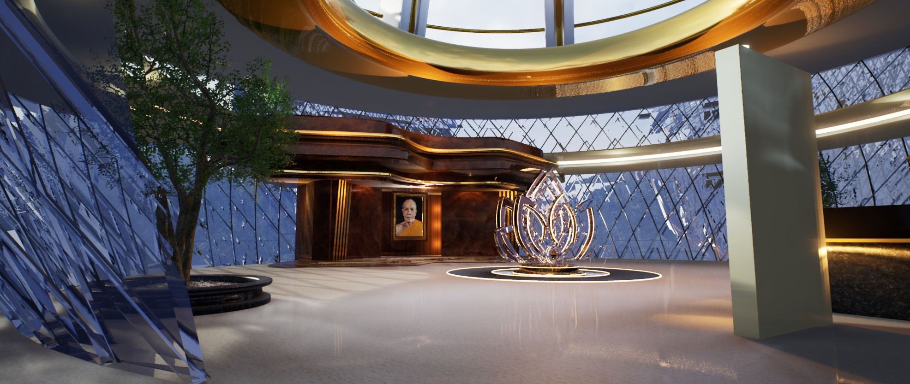

Lotus Lobby / ห้องดอกบัว
เป็นอาคารลอยน้ำ ทรงดอกบัวบาน มียอดค้ำฟ้า 8 เสา ได้แรงบันดาลใจคล้ายช่อฟ้าคู่ของพระอุโบสถ เพื่อทำให้ระลึกวันแรกที่อุปสมบท ภายในนำเสนอสื่อมหาปูชนียาจารย์ ผู้เป็นต้นแบบแห่งการอุปสมบท และความเป็นมาของการจัดงานมุทิตาสักการะพระมหาเถระและพระเถระ ของวัดพระธรรมกาย